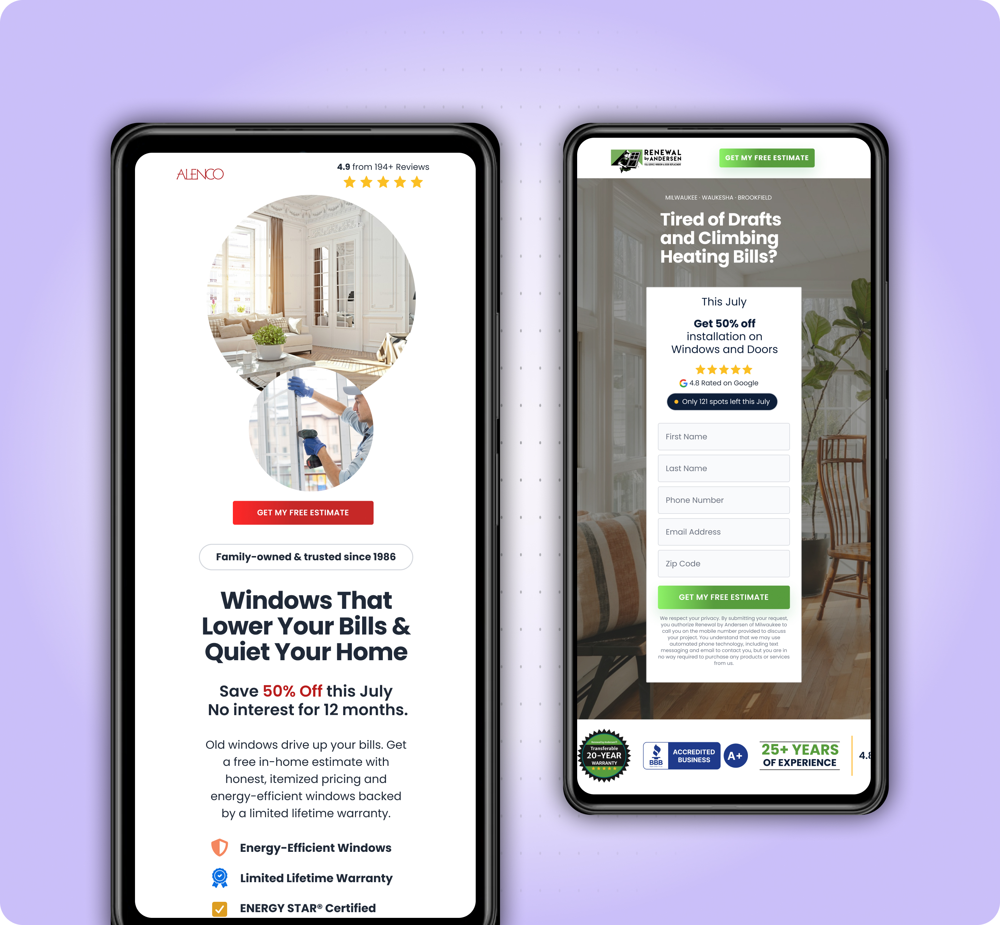
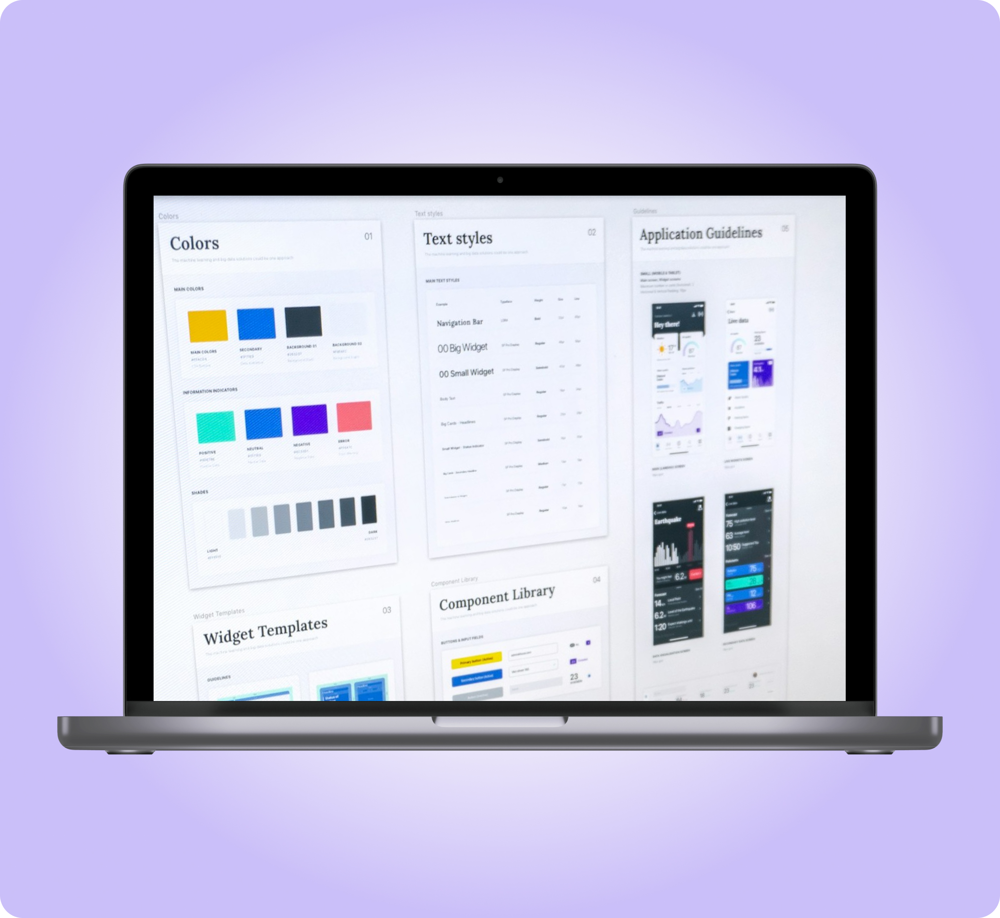
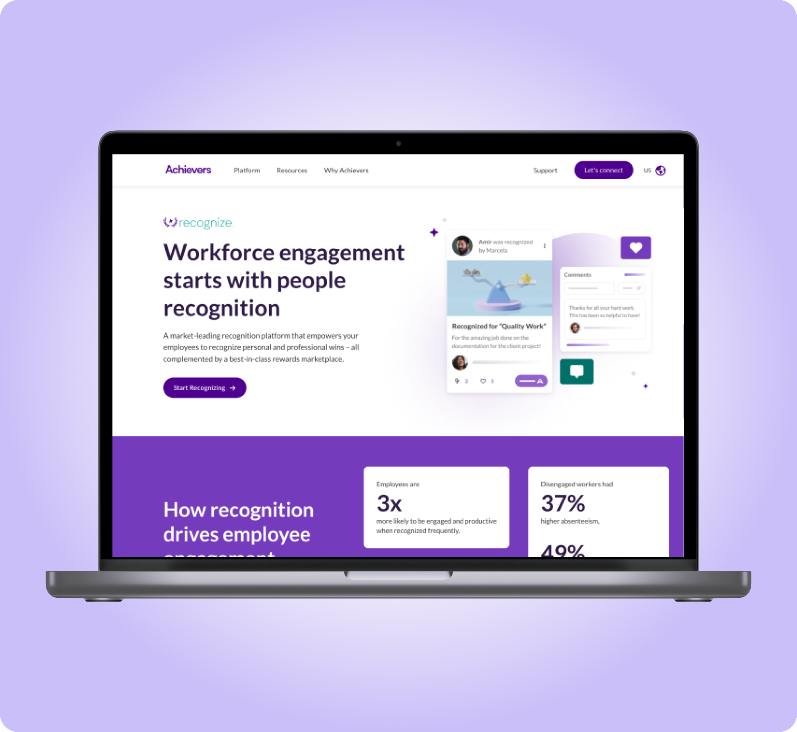
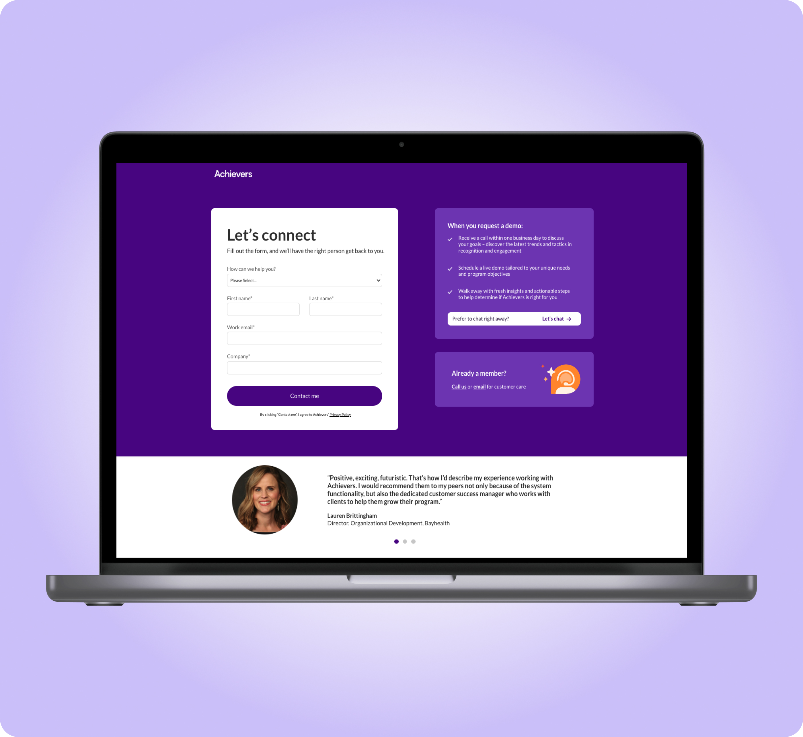
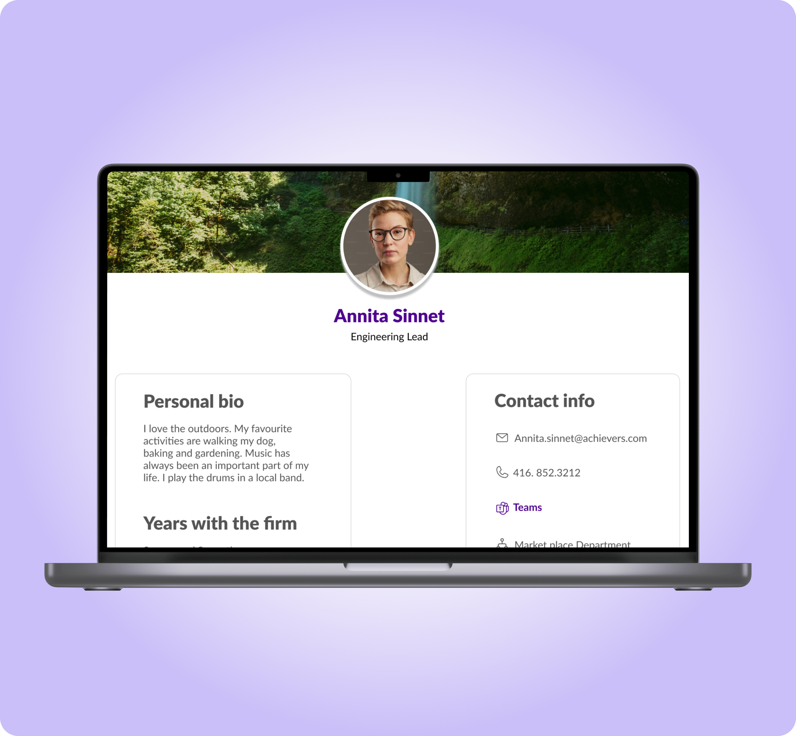
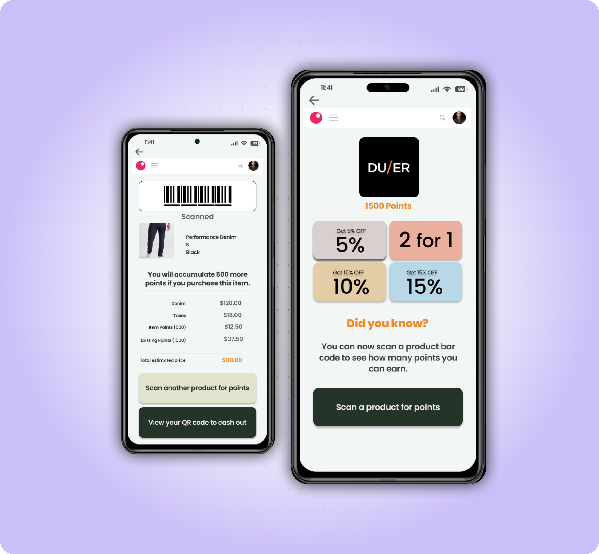

Product & Growth Design — Toronto, CA
I turn design decisions into measurable results, fixing what's not converting, or building the process from scratch when nothing exists yet.
Selected work
User impact: Designed layouts and copy that actually spoke to users, addressed their hesitations, and helped them picture their own outcome.
Biz impact: Design and build time cut from 3 weeks to 3–5 days

Building an agentic AI design process for conversion-focused UI
User impact: Consistent, on-brand pages every time
Biz impact: 85% faster landing page design

Building an AI-readable design system for faster design
User impact: 5 comprehensible product pages
Biz impact: 20% increase in qualified leads

Redesigning product page UI
to build trust
User impact: A fun interactive form that made sense
Biz impact: 80% higher user completion rate

Optimizing the form landing page for user completion
User impact: Easily finding the expert within the company
Biz impact: 25% higher product engagement

Turning a recognition product into a collaborator finding tool
User impact: 85% Customer Satisfaction Score
Biz impact: Brand loyalty made easy

Designing convenience to win customer loyalty
A bit about me
Empathetic research, iterative design, and a bias toward measurable outcomes — that's how I've helped teams like Achievers, Lightspeed and RCA Records turn user insight into growth.
More about my processKind words
I highly recommend Salimeh based on our work together at an HR Tech company. Her exceptional communication skills, curiosity, and detail-oriented approach were consistently impressive. Her deep understanding of user behavior led to valuable insights that significantly improved our website's user experience.
Awesome job with the new website navigation — it makes it so much easier to surface all the valuable content that we have on the site but also makes the new buyer journey so much more intuitive and sticky!
Salimeh is a talented UX designer who played a pivotal role in helping us conduct thorough market research, providing invaluable insights into our target markets and their behaviour on our micro sites.
Salimeh's crucial role in redesigning our website navigation showcased her attention to detail and user-centric approach, leading to improved engagement. Her user journey map highlighted key areas for improvement in our conversion funnel.
Salimeh excelled in optimizing our website through A/B testing, demonstrating a keen understanding of user interactions. Her data-driven approach led to measurable improvements in engagement and satisfaction.
Salimeh was a pleasure to work with. She did content curation, analysis, and social media copywriting for our company. She's consistently up to date on marketing trends.
Collaborating with Salimeh during our company Hackathon was a pleasure. By taking on a product manager role and orchestrating our team's presentation, she led us to deliver an impressive project — resulting in our "Spirit of the Hackathon" award win.
Salimeh assisted me in understanding user behavior on multiple paid media landing pages. Her insights led to significant optimization improvements — a standout project was her user research for the Singapore audience.